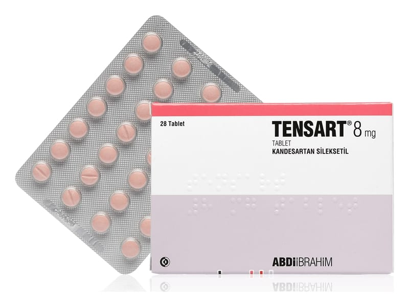

Tensart 8 mg Tablet, 28 Adet

Ne için kullanılır
KT · Bölüm 1TENSART 28 ve 84 tabletlik ambalajlarda pazarlanmaktadır. Her bir tablet 8 mg etkin madde içerir. TENSART 8 mg tabletler, açık pembe renkli, yuvarlak, bikonveks, bir yüzü çentikli tabletlerdir.
Yetişkinlerde yüksek kan basıncının (hipertansiyon) ve kalp kası fonksiyonlarının azaldığı hastalardaki kalp yetmezliğinin tedavisinde anjiyotensin dönüştürücü enzim ADE inhibitörlerine ilave olarak (ADE inhibitörleri kalp yetmezliği tedavisinde kullanılan bir ilaç grubudur) veya ADE inhibitörlerinin kullanılamadığı zamanlarda ya da mineralokortikoid reseptör antagonistleri (bu grup ilaçlar bir çeşit idrar söktürücüdürler, vücudunuzdaki fazla sodyum ve suyun atılmasını sağlarlar) tolere edilemediğinde kullanılmaktadır.
Etkin madde kandesartan sileksetildir. Kandesartan sileksetil, 'anjiyotensin II reseptör antagonisti' adı verilen bir ilaç grubuna aittir. Kan damarlarınızı gevşetmekte ve genişletmektedir. Bu da kan basıncınızın düşmesine yardımcı olmaktadır. Böylece kalbinizin kanı vücudunuzun tüm bölümlerine pompalaması kolaylaşır.